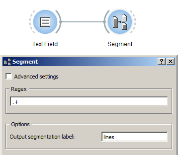

Segment text in smaller units¶
Goal¶
Segment text in smaller units (e.g. lines, words, letters, etc.).
Prerequisites¶
Some text has been imported in Orange Textable (see Cookbook: Text input) and possibly further processed (see Cookbook: Segmentation manipulation).

Procedure¶

Figure 1: Segment text in lines with an instance of Segment.
- Create an instance of Segment on the canvas.
- Drag and drop from the output connection (righthand side) of the widget instance that emits the segmentation to be segmented (e.g. Text Field) to the Segment instance’s input connection (lefthand side).
- Open the Segment instance’s interface by double-clicking on its icon on the canvas.
- In the Regex section, insert the regular expression describing the
units that will be segmented (for example to segment a text in lines use
.+, in words\w+, in letters\w, in characters., and so on) then click on the validation button on the right. - Click the Send button (or make sure the Send automatically checkbox is selected).
- A segmentation containing a segment for each specified unit (e.g. line) is then available on the Segment instance’s output connections; to display or export it, see Cookbook: Text output.
Comment¶
- In the Regex field you can use all the syntax of Python’s regular expression (cf. Python documentation).